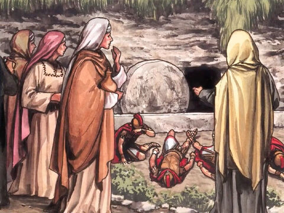
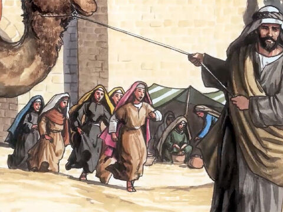

The Resurrection Of Lord Jesus
And when the sabbath was past, Mary Magdalene, and Mary the mother of James, and Salome, had bought sweet spices, that they might come and anoint him.
And very early in the morning the first day of the week, they came unto the sepulchre at the rising of the sun.
And they said among themselves, Who shall roll us away the stone from the door of the sepulchre?
Mark 16:1-3
And, behold, there was a great earthquake: for the angel of the Lord descended from heaven, and came and rolled back the stone from the door, and sat upon it.
His countenance was like lightning, and his raiment white as snow:
And for fear of him the keepers did shake, and became as dead men.
Matthew 28:2-4
And they found the stone rolled away from the sepulchre.
And they entered in, and found not the body of the Lord Jesus.
And it came to pass, as they were much perplexed thereabout, behold, two men stood by them in shining garments:
And as they were afraid, and bowed down their faces to the earth, they said unto them, Why seek ye the living among the dead?
He is not here, but is risen: remember how he spake unto you when he was yet in Galilee,
Saying, The Son of man must be delivered into the hands of sinful men, and be crucified, and the third day rise again.
And they remembered his words,
And returned from the sepulchre, and told all these things unto the eleven, and to all the rest.
It was Mary Magdalene and Joanna, and Mary the mother of James, and other women that were with them, which told these things unto the apostles.
And their words seemed to them as idle tales, and they believed them not.
Luke 24:2-11
Now when they were going, behold, some of the watch came into the city, and shewed unto the chief priests all the things that were done.
And when they were assembled with the elders, and had taken counsel, they gave large money unto the soldiers,
Saying, Say ye, His disciples came by night, and stole him away while we slept.
And if this come to the governor's ears, we will persuade him, and secure you.
So they took the money, and did as they were taught: and this saying is commonly reported among the Jews until this day.
Matthew 28:11-15
Peter therefore went forth, and that other disciple, and came to the sepulchre.
So they ran both together: and the other disciple did outrun Peter, and came first to the sepulchre.
And he stooping down, and looking in, saw the linen clothes lying; yet went he not in.
Then cometh Simon Peter following him, and went into the sepulchre, and seeth the linen clothes lie,
And the napkin, that was about his head, not lying with the linen clothes, but wrapped together in a place by itself.
Then went in also that other disciple, which came first to the sepulchre, and he saw, and believed.
For as yet they knew not the scripture, that he must rise again from the dead.
Then the disciples went away again unto their own home.
John 20:3-10
- 

- 